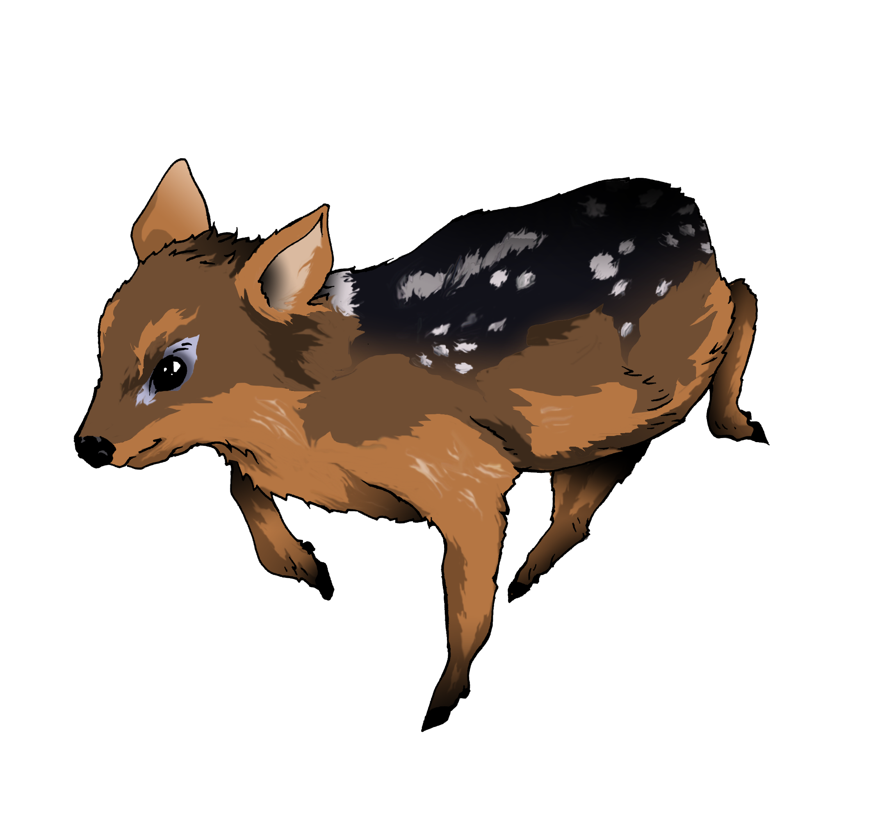

roberttson
Streamer por oficio · Abogado de profesión · Profesor por vocación
Recursos
Cronología: Caso Hermosilla
101 hitos · 7 aristas · 2020–2026

Streamer por oficio · Abogado de profesión · Profesor por vocación
